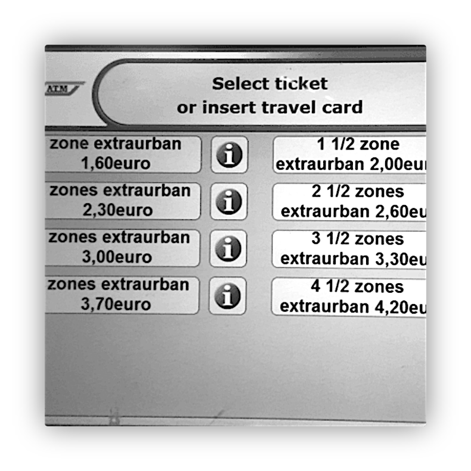
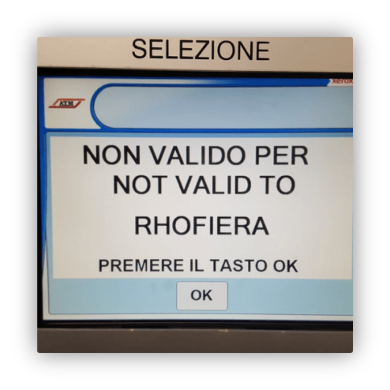
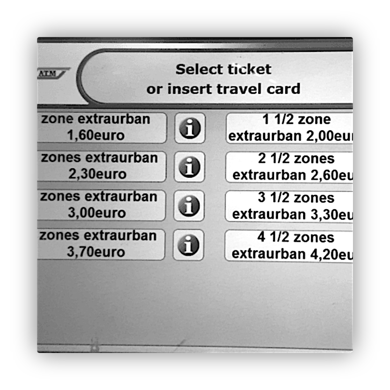
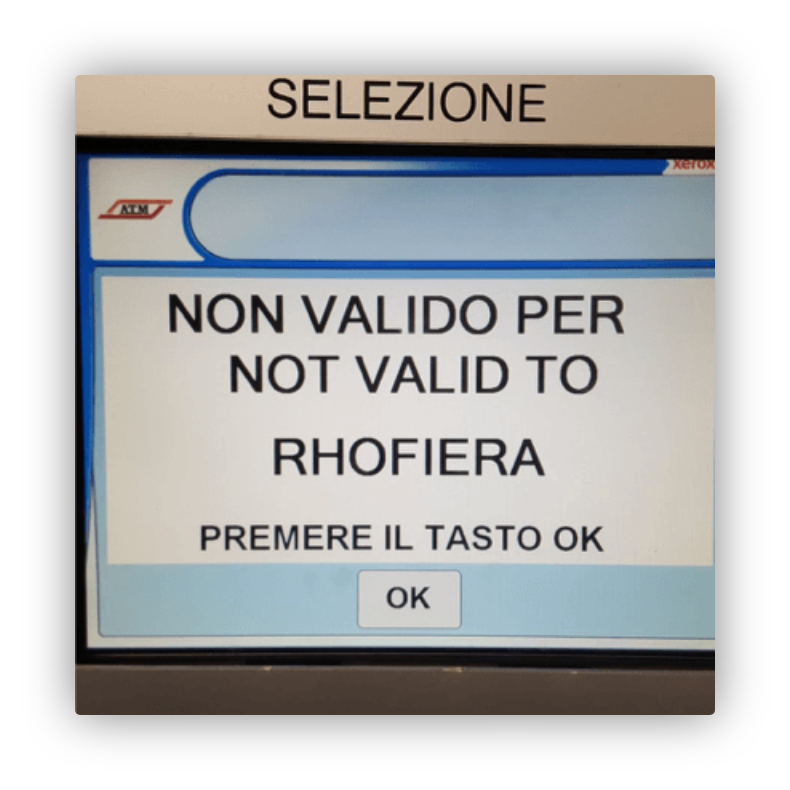

Luhiriri Mudekereza Guillaume
Congolese | Designer | Developer | Creator
I strive to find creative solutions for businesses through strategic concept, clean code and elegant design.

I strive to find creative solutions for businesses through strategic concept, clean code and elegant design.
The project goal is to review the Kiosk user interface in order to make it more usable.
Working mid-fidelity prototype that takes into account for the most important features.
There was 2 types of issues, Learnability issues ( eg. too many options leading to confusion,… ) and Efficiency issues ( too many steps to get to buy a ticket, users where lost in particular screens, the Rho Fiera screen through people off… )
 



Doing so, enabled us to have even more insights, eg.How to insert the ATM card ?
The more mental models we consider while building the user experience, the better.
This was very helpful in a way that it helped us simplify the user-journeys.
We defined 5 personas which are : tourist family, occasional user,
weekender, employee commuter and student commuter.
Then depending on the different scenario for the ATM
kiosk usage, we defined the decision making towards individual
goals by the different personas. Hence the flowchart.
After that, we opened BALSAMIQ and using the data we collected, came
up with a mid-fidelity prototype for the ATM kiosk software.
We chose “ The student commuter ” as our main subject
and designed the prototype according to her journey. Down here, you
find one of the task performed by the student ( buying a standard
ticket ).